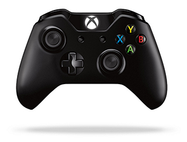
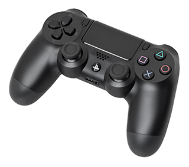

Early games used interactive electronic devices with various display formats. The earliest
example is from 1947—a "Cathode ray tube Amusement Device" was filed for a patent on 25
January 1947, by Thomas T. Goldsmith Jr. and Estle Ray Mann, and issued on 14 December 1948,
as U.S. Patent 2455992.
Inspired by radar display tech, it consisted of an analog device that allowed a user to control
a vector-drawn dot on the screen to simulate a missile being fired at targets, which were drawings
fixed to the screen.
Other early examples include:
The Nimrod computer at the 1951 Festival of Britain
OXO a tic-tac-toe Computer game by Alexander S. Douglas for the EDSAC in 1952
Tennis for Two, an electronic interactive game engineered by William Higinbotham in 1958
Spacewar!, written by MIT students Martin Graetz, Steve Russell, and Wayne Wiitanen's on a DEC PDP-1 computer in 1961.
Each game used different means of display: NIMROD used a panel of lights to play the game of Nim, OXO used
a graphical display to play tic-tac-toe Tennis for Two used an oscilloscope to display a side view of a
tennis court, and Spacewar! used the DEC PDP-1's vector display to have two spaceships battle each other.
Nolan Bushnell at the Game Developers Conference in 2011
In 1971, Computer Space, created by Nolan Bushnell and Ted Dabney, was the first commercially sold, coin-operated
video game. It used a black-and-white television for its display, and the computer system was made of 74 series TTL chips.
The game was featured in the 1973 science fiction film Soylent Green. Computer Space was followed in 1972 by the Magnavox
Odyssey, the first home console. Modeled after a late 1960s prototype console developed by Ralph H. Baer called the "Brown Box",
it also used a standard television. These were followed by two versions of Atari's Pong; an arcade version in 1972 and a home
version in 1975 that dramatically increased video game popularity. The commercial success of Pong led numerous other companies
to develop Pong clones and their own systems, spawning the video game industry.

XBOX 1 Controller
Video Game
Past Till Now
A video game is an electronic game that involves human interaction with a user interface to generate visual feedback
on a video device. The word video in video game traditionally referred to a raster display device, but it now implies any
type of display device that can produce two- or three-dimensional images. The electronic systems used to play video games are
known as platforms; examples of these are personal computers and video game consoles. These platforms range from large mainframe
computers to small handheld devices. Specialized video games such as arcade games, while previously common, have gradually declined
in use. Video games have gone on to become an art form and industry.
The input device primarily used to manipulate video games is called a game controller, and varies across platforms. For example, a
controller might consist of only a button and a joystick, while another may feature a dozen buttons and one or more joysticks. Early
personal computer games often needed a keyboard for gameplay, or more commonly, required the user to buy a separate joystick with at
least one button. Many modern computer games allow or require the player to use a keyboard and a mouse simultaneously. A few of
the most common game controllers are gamepads, mouses, keyboards, and joysticks. In recent years, additional methods of input have
emerged such as camera-based player observation for video game consoles and touch-sensitive screens on mobile devices.

Playstation 4 Controller
Overview
Platforms
The term "platform" refers to the specific combination of electronic components or computer hardware which, in conjunction
with software, allows a video game to operate. The term "system" is also commonly used.
In common use a "PC game" refers to a form of media that involves a player interacting with an IBM PC compatible
personal computer connected to a video monitor. A "console game" is played on a specialized electronic device that connects
to a common television set or composite video monitor. A "handheld" gaming device is a self-contained electronic device
that is portable and can be held in a user's hands. "Arcade game" generally refers to a game played on an even more
specialized type of electronic device that is typically designed to play only one game and is encased in a special cabinet.
These distinctions are not always clear and there may be games that bridge one or more platforms. In addition to personal
computers, there are multiple other devices which have the ability to play games but are not dedicated video game machines,
such as mobile phones, PDAs and graphing calculators.
With the advent of social networking and other online applications hubs, the term "platform" started being used to refer
to the online service within which the game is played, regardless of the actual hardware on which it is executed. A game's
platform could simply be "Facebook", whether it is played on a Windows PC, Mac, Smart TV, or smartphone.